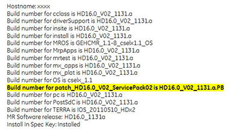

Installing Service Packs
Prerequisites
Overview
This procedure applies to all Excite MR Systems and all DV MR Systems.
IMPORTANT: Make sure the Service Pack is installed immediately after completion of the Application Software Load process. See the latest revision of MR Service Pack Software Matrix, DOC1667089, available from the online documentation library.
IMPORTANT: Open the “Read Me” file to observe any special processes that need to be completed to properly complete service pack installation. Example: a VRE Reconfiguration is needed to completely install Service pack for HD23_V02 release.
When GE releases new software versions, it may be necessary to install updates to a Host PC. This document includes:
The Remote Software Download application can manage software updates and install them automatically. Refer to Remote Software Download for more information.
1 Determining Service Pack Information on System
Procedure
- Open up a C-shell, type getver and click enter.
- The Service Pack Information is noted in bold in the results
list. In the example shown below (for system HD16.0_V02), Service
Pack 02 is loaded.
Figure 1. Service Pack Information

- If the proper Service Pack has been loaded, obtain the GE Equipment Maintenance sticker (part number 5661793) and write the date and Service Pack number on the sticker and place the sticker on the GOC for future reference.
- Proceed to the next section if the latest service pack is not loaded per MR Service Pack Software Matrix, DOC1667089.
2 Accessing Guided Install Interface
Procedure
- Restart the host computer to access the login screen. When prompted,
log in as the root user, and click Yes to invoke
the Guided Install.note:
It is possible that the customer changed the default password. If you cannot log in, contact the customer for the correct password.
note:Updates should not be loaded with applications software running.
- Expand Utilities and click on Patches, then select the Patches tab displayed below.
Figure 2. Patches Tab

From this GUI, the following tasks can be performed:
-
Examine the “Read Me” file for special patch installation instructions.
-
Review the Installed Patches section to determine the updates that have been loaded on the system disk.
-
Select CDROM to determine the updates that are on the CD/DVD.
-
Select Repository to determine the updates that have been downloaded to the host computer and saved in /usr/g/insite/data via InSite.
-
Select Patch Information to view available help files on the system, CD/DVD, or in the /usr/g/insite/data directory.
-
3 Loading Updates from Repository or CD/DVD
Procedure
- There are two methods for loading software updates on the Linux
host computer, from the repository or a CD/DVD.
-
Select Repository to load an update from updates stored on the host computer at /usr/g/insite/data. (The list of applicable updates that have been downloaded to the host computer site via InSite display in the GUI.)
-
Insert the Update CD/DVD into the Host PC drive and select CD/DVD. The list of applicable updates on the CD/DVD display in the GUI.
note:For 11x, 12x and 15.0 M4A software releases: FMI 60936, deployed during Q3/Q4 2018, includes the Service Pack content on the same media as the Applications Software DVD. Use the Applications Software media as the Service Pack media.
-
- Click on the applicable update to load and select Install.note:
Only one update can be loaded at a time.
Figure 3. Available Updates

- If the update was properly loaded, it will display in the Installed Patches section. In addition to seeing it there,
the message Install Done displays in the status
section of the GUI to indicate a successful load.
Figure 4. Install Done Message

-
The update process looks for the software revision and conflicting information before loading. If the software revision of the update does not match the applications revision, this message displays in the status section of the GUI: The Update cannot be loaded.
-
If there is a conflict between the update on the system and the update being loaded, this message displays: Patch_tst_M4_01 = PA conflicts with patch_tst_M4_03-PA-1. This means the update must be deleted on the system before loading the new one. Refer to Removing Updates.
-
- Repeat the previous step until all the patches are installed.
- If needed, perform the patch load instructions that are documented in the “Read Me” file of the Service Pack.
- Reboot the system. When prompted, log in as sdc for user.
4 Removing Updates
Procedure
- In the Installed Patches section, select the update to be removed.
- Click Uninstall to remove the update.note:
Sometimes an update cannot be uninstalled and an uninstall error displays. It may be necessary to remove another update to resolve the conflict.
Finalization
Complete a Goodbye scan (Check Scan) to verify that the system is functioning properly.